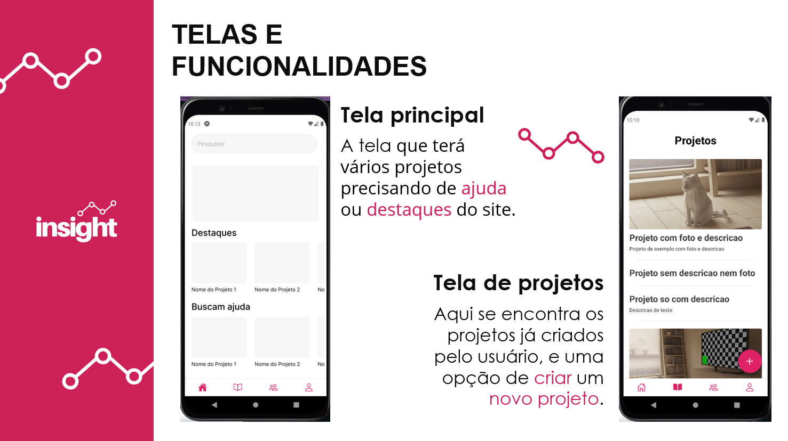
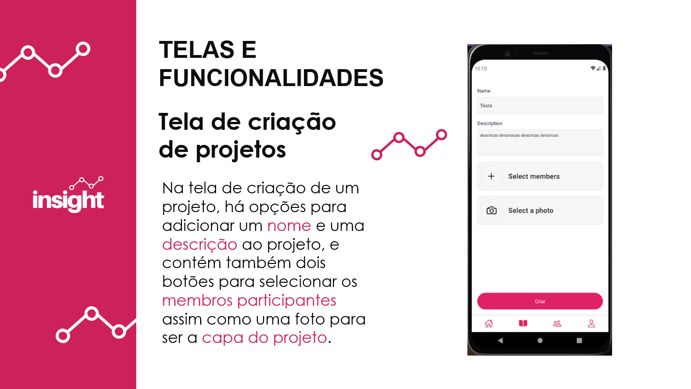
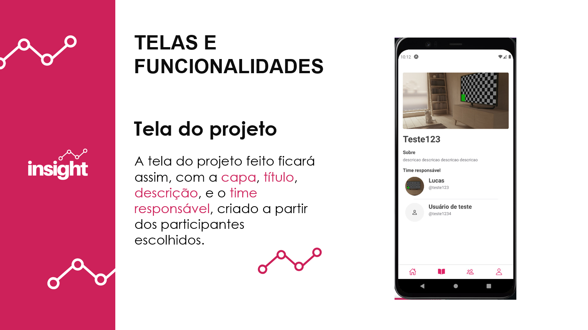

- Home
- >
- Portfólio
- >
- Todos os Projetos
- >
- Projeto Integrador
Insight
Descrição do projeto
Quando estava no fim do ensino fundamental, eu realizei a prova para entrar no Instituto Federal de Educação, Ciência e Tecnologia do Espírito Santo, cujo eu vinha estudando o ano inteiro para realizar. Até mesmo participei de um curso para preparação da prova, e consegui ser aprovado. Lá dentro, desenvolvi com os meus amigos de sala muitos conceitos de informática, e todo nosso aprendizado foi aplicado no último ano do técnico.
Insight é uma plataforma de desenvolvimento de projetos colaborativos, onde o usuário poderá ser ajudado em um projeto próprio ou ajudar em projetos de outros usuários. A colaboração é fundamental para o ser humano operar em sociedade. Desde o início da internet, projetos criaram raízes com apenas alguns colaboradores, vendo a facilidade de se conectar remotamente. A Insight tem a proposta de conectar o diverso público atual da internet, incentivando esse sentimento de cooperatividade, para a criação de projetos que talvez nunca saíssem do papel sem o envolvimento de outras pessoas interessadas
Não há facilidade de desenvolver um projeto independente, sem correr o risco de desorganização e falta de alcance à possíveis colaboradores. Insight nasceu dessa problemática, e juntamente com Lucas Tejada e Luiz Roberto, foi desenvolvido esta aplicação, e assim conseguimos concluir nosso curso técnico.
A aplicação detem de uma tela de login e cadastro; tela principal mostrando os projetos em destaque e os que precisam de ajuda; tela de criação de projetos, levando para telas de adicionar membros e imagens; tela de grupos e tela de perfil do usuário ativo, além de algumas outras telas. Alguma das tecnologias que utilizamos foram React Native e NodeJS.
Clique aqui para acessar este projeto no Github!
← Todos os Projetos
← Portfólio
← Home